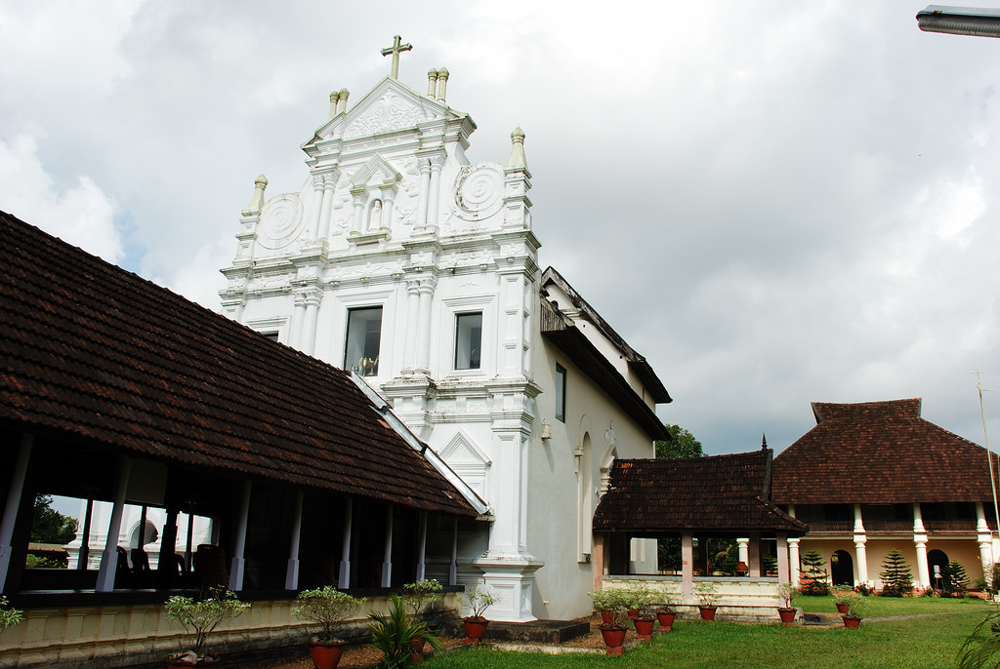
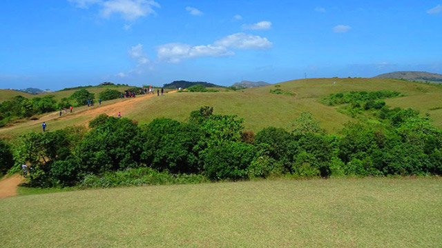

The ‘AksharNagari’ or the ‘Land of Letters’ in God’s Own Country wears a number of hats! Be it the diverse history, art and craft, cultures and traditions, this pictorial city in Kerala is a heaven for the tourists.Located in the basin of the mystical Vembanad Lake, this magnificent city also serves as a sought after backwater destination in Kerala. Also, as the perennial streams from the Western Ghats flows down and meet this gorgeous lake, Kottayam serves all the purpose of a backwater lover throughout the year. Whether planning a Kerala trip with family members, friends, or colleagues, visitors can make it to this pictorial city, hire houseboats, cruise across the turquoise backwaters, and unravel the magical charm and appeal of Kottayam.
Located in the basin of the mystical Vembanad Lake, this magnificent city also serves as a sought after backwater destination in Kerala. Also, as the perennial streams from the Western Ghats flows down and meet this gorgeous lake, Kottayam serves all the purpose of a backwater lover throughout the year. Whether planning a Kerala trip with family members, friends, or colleagues, visitors can make it to this pictorial city, hire houseboats, cruise across the turquoise backwaters, and unravel the magical charm and appeal of Kottayam.

Located at a height of 6000 ft above the sea level in the Western Ghats of Kottayam, Kerala, Illikkal Kallu is a major tourist attraction and one of the most pristine spots in all of India. Situated in Moonnilavu Village, Meenachil taluk, the nearest city to the summit is Teekoy. Besides several other factors which make this peak unique, the most prominent feature is that half the boulder of the majestic rock has fallen apart.
The remaining half stands sturdy and presents an extremely exalted picture. Surrounded by colossal green hills, the offbeat destination boasts of immaculate environs, enchanting panoramic vistas and an all around utopian atmosphere. In addition to the surreal natural beauty, the sublime view of the Arabian Sea in the near horizon as a thin blue stroke, is a sight beyond description.
The Kumarakom Bird Sanctuary, also popularly known as the Vembanad Bird Sanctuary, is a breathtaking and beautiful bird sanctuary that is located at Kumarakom in the Kottayam district in the Indian state of Kerala.Situated on the banks of the Vembanad Lake in the Kerala Backwaters, this bird sanctuary is a favourite destination for many native as well as migratory birds, which makes the place a dreamland full of ecstasy and delight for bird watchers and nature lovers.
The houseboats and motorboats that are available on rent to watch birds further enhance this enrichening experience. A trip to the Kumarakom Bird Sanctuary is thus a must while in Kerala, to explore and unravel the hidden treasures and gifts of the Earth.
This is an ancient Lord Shiva temple situated in the heart of Kottayam city. The Thirunakkara Mahadeva Temple attracts huge crowds due to its traditional Kerala architectural style and vibrant mural paintings. These depict the stories of Lord Shiva and the Dashavathara (ten avatars of Lord Vishnu). The temple houses a Koothambalam, the traditional temple theatre where performances of various cultural art and dance forms are held.
This temple is believed to be 500 years old, and records indicate that it was built by the King of Thekkumkoor (a princely state that existed before 1750 CE in the southern part of Kerala). The temple also includes an anakottil (elephant camp) and a Kodimaram (flag mast).

Kottathavalam is a well-known tourist spot in Kottayam (Kerala). Blest with a serene ambiance, this region is hemmed in the alluring Murugan hill. As far as your sight goes, you will see nothing else but lush green surroundings. These hillocks of Kottathavalam are the haven for nature lovers and trek aficionados. Tourists from distant places swarm to Kottathavalam and spend a good time here. It is a perfect location for the photo shoot as well.
The caves that were used as a resting place for the royal family of Madurai. The bewitching surroundings of Kottathavalam hillocks.The best time to spend the vacation here is throughout the year except monsoons. Due to the heavy rainfall, the hillocks become muddy and we will not like dirtying our branded footwear. Thus, check the monsoon and choose any season you like. During our trip, do not miss to explore the caves where the royal family of Madurai rested. These caves today hold the intricately rock-carved sculptures that catch the sight.
Located at a distance of 5 kms east of Pala in Bharananganam, Kottayam, St. Mary’s Church holds the mortal remains of St. Alphonsa (1910- 1946). Born as Anna Muttathupadathu, St. Alphonsa was an Indian religious sister and educator. She was the first Indian woman to be canonised as a Saint by the Catholic Church and also the first canonised saint in Syro-Malabar Catholic Church, an Eastern Catholic Church in India. Her death anniversary falls on the 28th of July which is a highly revered day when the church is thronged by devotees in huge numbers to visit to pay homage to the saint and to seek her blessings.
The museum adjacent to the chapel holds her belongings- her books, cot, umbrella etc. A copy of her sermon is also available which reads, “Alphonsa is among the few great souls who lived in India; who have achieved greatness in God’s sight”. Next to it is her room where she spent several years of her life. Across the chapel is the two storeyed building which was originally the Papal podium, is now surrounded by a stadium and well-maintained terraced garden. The complex also houses a souvenir shop which sells books, rosaries and pictures to take home.